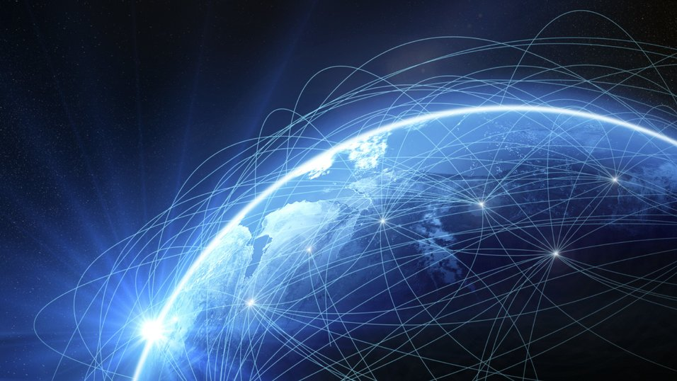

Digital samtid og sosiale medier
Hva er internett, egentlig?
Internett er et verdensomspennende datanettverk. Internettet skaper grunnlag for en rekke kommunikasjonstjenester. I løpet av de siste årene har mange små nettverk blitt bygget opp og satt sammen til et stort nettverk. I dag bruker vi internett til å bl.a. kommunisere med folk fra rundt om i verden. I tillegg bruker vi det til å hente informasjon.

Var det noe som overrasket dere i filmen?
Noe som var overraskende i filmene "Lo and behold" (Werner Herzog) og "A Journey To The Bottom Of The Internet" var hvor avhengige vi mennesker har blitt av internett. Idag tenker vi ikke så mye over at internett har blitt en svært stor del av hverdagen vår.
Noe annet som overrasket oss var det at det finnes flere som reagerer og blir syke av strålingen internett sender ut. I filmen så vi at det var flere som måtte bo på et spesielt område hvor strålingen ikke strakk til. Dette viser at det ikke bare er positive sider ved internett, men at det oggså kan være skadelig for noen mennesker.
Hvor dårlig sikkerheten på internett og tilagangen til informasjon kan være, var også noe som overrasket oss. Det at det var lett for en hacker å få tak i viktig informasjon, viser at man noen ganger ikke tenker på hvor lett det kan være for andre å misbruke informasjon på internett.
Var det noe som var vanskelig å forstå?
Noe som kan være svært vanskelig å forstå er hvordan internettet faktisk er bygd opp, og hvordan vi bare ved enkle kabler kan kommunisere og legge ut ting ved hjelp av internett. Det er vanskelig å forstå at det faktisk går ann
Noen avgjørende måter internett har forandret dagliglivet vårt på:
- Idag har vi større tilgang til informasjon på nett. Dette påvirker hverdagen vår mye, og vi har blitt en generasjon som er avhegngig av internett til både jobb, skole og hjemme.
- Kommunikasjon er også en stor forandring som har i stor grad endret seg fra 1900-tallet til hverdagen i dag. Vi er idag "avhengige" av å kunne kommunisere med folk via internett.
- Idag er det også flere ting som kan bli styrt av internettet. Eksempler på dette er selvkjørende biler, robåter som tenker selv og lys som kan skru seg på ved bare å snakke eller lage lyd.
Prøv selv, oppgaver:
- Jeg bruker flere timer på internett hver dag. Dette er fordi jeg bruker internett både på skolen, hjemme og når jeg er ute. Den største grunnen er at jeg er avhengig av å kommunisere med folk via internettet. Jeg bruker sosiale medier som for eksempel Snapchat, Facebook, og Instagram

- De appene jeg bruker mest daglig er Spotify, Meesenger, Facebook, Snapchat, Instagram, Google, og Vsco
- I følge sosialkommunikasjon.no viser målinger av bruksfrekvensen at nesten 9 av 10 av Facebookbrukere bruker Facebook daglig. Det vil si at over 3 millioner mennesker i Norge bruker Facebook daglig.
Når det kommer til Facebook, er det cirka sju av ti som bruker denne appen daglig. Dette innebærer over to millioner daglige snap-brukere i Norge.
- I følge Aftenposten.no er det minst 200 000 nordmenn som ikke bruker internett i det hele tatt i dag. De skriver også at det er flere som har tilgang, men som ikke vet hvordan man bruker det.
- Den